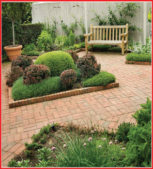
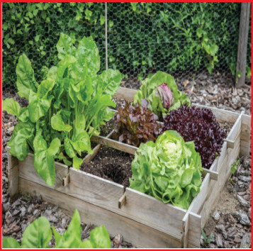

(c) Study the following pictures of small gardens and answer the following questions.


Questions
1. What is the first step in making a small garden?
2. What are the other steps in making a small garden?
3. How can one make a small garden?